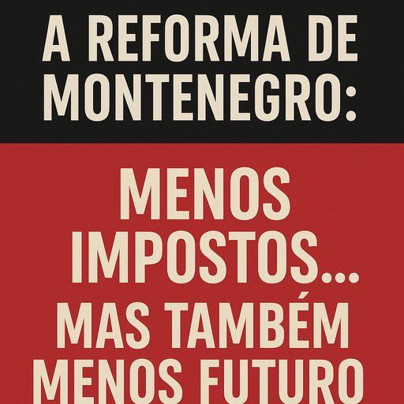

Publicado em 2025-06-15 07:43:30
Ontem, o governo de Luís Montenegro apresentou ao país o que chamou de “Agenda Transformadora”.
Promete menos impostos, menos burocracia, mais liberdade para empresas e mais eficiência na máquina do Estado.
À primeira vista, parece música para os ouvidos de quem trabalha e produz.
Mas quando olhamos mais de perto, o que soa não é uma sinfonia de progresso — é um remix gasto das promessas de sempre, sem uma nota de futuro.
Sim, o alívio fiscal é importante.
Sim, descomplicar o Estado é urgente.
Mas nenhuma economia se transforma apenas com medidas fiscais.
Reformar o Estado sem apostar no que gera riqueza real — educação, ciência, inovação e cultura — é como querer correr uma maratona descalço: até pode começar rápido, mas vai estagnar ao primeiro obstáculo.
Eis o que o plano de Montenegro ignora (ou evita):
O governo fala em “transformar o Estado”, mas a transformação que o país precisa não é administrativa — é estrutural, cultural e geracional.
O que Montenegro propõe, na verdade, é uma gestão tecnocrática do status quo, com roupagem moderna.
Tira-se peso ao Estado — mas não se dá músculo ao país.
Corta-se o mato — mas não se planta nada de novo.
A mesma visão curta que Portugal já conhece há décadas: aliviar o presente, sem ousar construir o futuro.
Uma verdadeira “agenda transformadora” teria de:
Montenegro lançou medidas que aliviam o bolso —
mas continuam a esvaziar o país daquilo que realmente o pode tirar da cauda da Europa: inteligência, ambição e coragem para inovar.
Sem educação, não há soberania.
Sem inovação, não há futuro.
E sem visão, não há reforma — apenas mais uma gestão da mediocridade.
📍Publicado em Fragmentos do Caos
✍️ Por Francisco Gonçalves & Augustus Veritas
“A reforma de Montenegro corta nos impostos, mas também corta no futuro.
Não há investimento na inteligência, na ciência, nem na juventude.
Reformar o Estado sem educar o país é como mudar o telhado enquanto o alicerce apodrece.”— Francisco Gonçalves